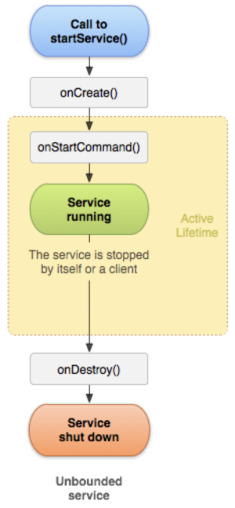
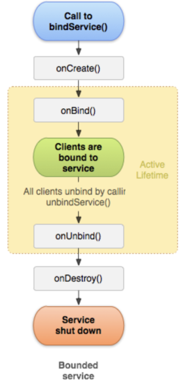

[Android] 서비스 - (4) 서비스의 생명주기
서비스의 생명주기 메소드
서비스도 액티비티와 마찬가지로 생명주기 메소드가 존재합니다. 다만 서비스의 종류에 따라 호출되는 메소드가 다릅니다.
스타트 서비스
스타트 서비스(Start Service)는 startService()메소드를 호출하여 실행합니다.

스타트 서비스가 시작되면 다음과 같은 순서로 서비스의 생명주기 함수가 호출됩니다.
(1) onCreate()
서비스가 처음 생성될 때 한 번 호출됩니다.
(2) onStartCommand()
다른 액티비티가 startService()를 호출하면 이 메소드가 호출됩니다. 이 메소드에서는 서비스가 백그라운드에서 실행할 작업을 구현합니다.
스타트 서비스는 한번 실행하면 액티비티 종료와 무관하게 무한히 실행됩니다. 따라서 stopSelf()나 stopService()를 호출하면 서비스를 종료할 수 있습니다.
(3) onDestroy()
stopSelf()나 stopService()가 호출되어 서비스가 소멸할 때 호출됩니다.
바운드 서비스
바운드 서비스(Bound Service)는 bindService()메소드를 호출하여 실행합니다.

바운드 서비스가 시작되면 다음과 같은 순서로 서비스의 생명주기 메소드가 호출됩니다.
(1) onCreate()
서비스가 처음 생성될 때 한 번 호출됩니다.
(2) onBind()
액티비티에서 bindService()를 호출하면 이 메소드가 호출됩니다. 이 메소드는 IBinder객체를 반환하며, 액티비티는 이 객체를 사용하여 서비스와 통신합니다. 참고로 바운드 서비스에는 여러 액티비티가 바인딩될 수 있습니다.
(3) onUnbind()
액티비티에서 unbindService()를 호출하여 서비스와의 바인딩을 끊을 수 있습니다. 이후 서비스의 onUnbind()메소드가 호출됩니다.
(4) onDestroy()
서비스가 소멸할 때 호출됩니다. 바운드 서비스는 stopSelf()나 stopService()를 호출하지 않아도 됩니다. 서비스에 바인딩된 액티비티가 모두 연결을 끊으면 서비스도 소멸합니다.